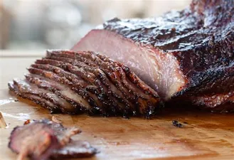

Smoked BBQ Brisket

This recipe will help you create a wonderful and delicious brisket.
In this recipe I will be giving you my personal spice rub, but you all are more than welcome to alter it to your liking. I will also make sure to give you the instructions on how to prepare, how to cook, and what you need to do after the cook.
Spice Rub
- 1/2 cup of Granulated Pepper
- 1/2 cup of Salt
you can also use the rub that I use for my pull pork if you do not want to do the classic texas rub.
Prep Process, this should be done the day before the cook.
- If your brisket has more fat than you would like feel free to cut some off, but don't cut to much because the fat hold all the flavor and keeps the meat moist and juicy.
- You want to cover your brisket with a binder, I like to use mustard but other use siracha, hot sauce, ect...
- After putting the binder on make sure to put your spice rub evenly.
- Cover the brisket lightly with plastic wrap and put it in the fridge until cook day.
- Pull the brisket out from the fridge about 1 hour before the cook.
Cook Day
- Choose your choice of wood, I like to use cherry, but any classic wood like hickory or mesquite. Don't be afraid to experiment and try other woods out.
- Get your grill up to 225 and place the brisket inside your smoker.
- While your brisket is being smoked grab a spray bottle and make sure its clean and fill it up with some liquids. It can be water, beer, apple juice, or apple cider. You can also do a jack and coke as well. The liquid being sprayed on helps with holding on the smoke.
- When cooking a brisket rule of thumb is every pound takes about 1.5 hours. If you use a probe to monitor temp, you want the final temp to be around 205.
- I like to spray about ever hour but after cooking for awhile you will figure out what works best for you.
- After awhile of smoking, you will reach a point called the stall. This is where no matter how long you are cooking the temp doesn't want to change, it will start rising again. During the stall you may want to pull it out and wrap it either with aluminum or butcher paper. Let it finish in the wrap.
- Once when the temp is reached pull it out and let it rest for about 2 hours in a cooler.
- Take it out after the rest time and cut against the grain and Enjoy.
Back to home page